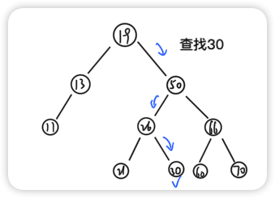
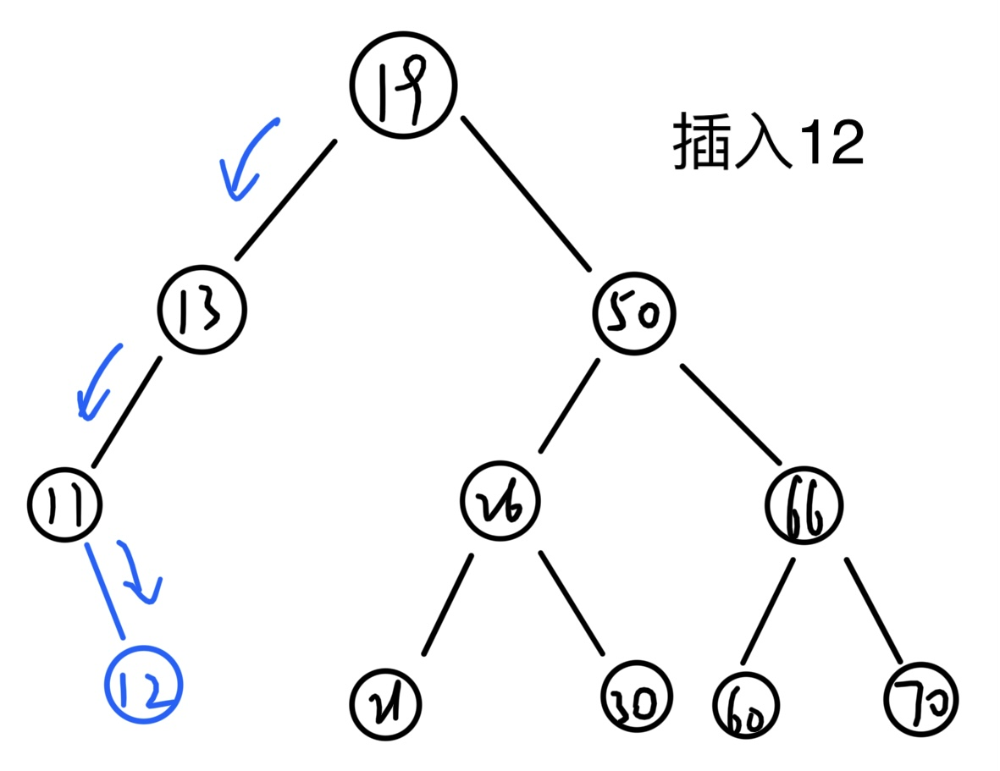
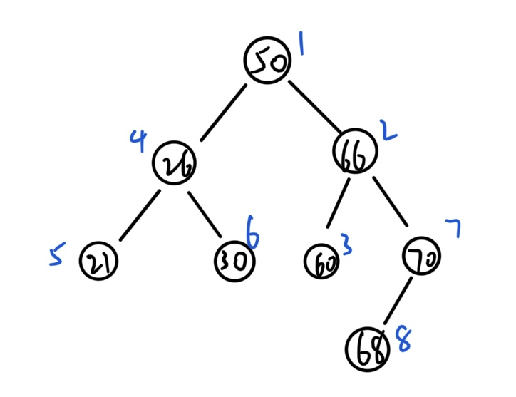
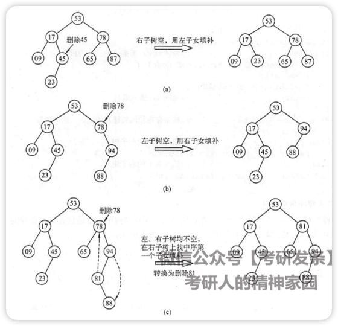
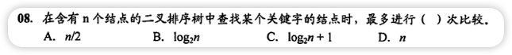

n次查找

递归查找
最坏空间复杂度O(h) h是树高
xxxxxxxxxx101// 在二叉排序树查找值为key的结点（递归实现） 2BiNode *BSTSearch_recursion(BiTree T, int key) { 3 if (T == nullptr) // 二叉排序树中没有对应的值最后会变成空指针 4 return NULL; 5 if (key == T->data.value) // 找到对应值为key的结点，返回当前结点 6 return T; 7 if (key < T->data.value) // 要搜索的值比当前结点的值小，搜索左子结点 8 return BSTSearch_recursion(T->lchild, key); 9 return BSTSearch_recursion(T->rchild, key); // 要搜索的值比当前结点的值大，搜索右子结点 10}顺序查找
最坏空间复杂度O(1)
xxxxxxxxxx111// 在二叉排序树查找值为key的结点 2BiNode *BSTSearch(BiTree T, int key) { 3 while (T != nullptr && key != T->data.value) { // 值等于key就会跳过循环内的操作直接返回对应结点 4 if (key < T->data.value) // 要搜索的值比当前结点的值小，指针变成左子结点 5 T = T->lchild; 6 else // 要搜索的值比当前结点的值大，指针变成右子结点 7 T = T->rchild; 8 } 9
10 return T;11}插入

xxxxxxxxxx141// 向二叉排序树T中插入key 2int BSTInsert(BiTree &T, int key) { 3 if (T == NULL) { 4 T = (BiTree) malloc(sizeof(BiNode)); // 如果结点为空就新建一个结点 5 T->data = {key}; 6 T->lchild = T->rchild = NULL; 7 return 1; 8 } 9 if (key == T->data.value) // 如果存在一个一样的结点就跳过 10 return 0; 11 if (key < T->data.value) // 如果要插入的值key比当前结点的值小就插入左子结点 12 return BSTInsert(T->lchild, key); 13 return BSTInsert(T->rchild, key); // 如果要插入的值key比当前结点的值大就插入右子结点 14}构造
按[50,66,60,26,21,30,70,68]建立BST

xxxxxxxxxx51void CreatBST(BiTree &T, int arr[], int n) { 2 T = NULL; 3 for (int i = 0; i < n; ++i) 4 BSTInsert(T, arr[i]); 5}删除

一边空就用另一边补
两边都不空就用右子树最小的（左下角）补上，同时删除右子树最小的结点
xxxxxxxxxx241// 在二叉排序树中删除值为key的结点 2BiNode *BSTDelete(BiTree &T, int key) { 3 if (T == NULL) // 没有要被删除的结点 4 return NULL; 5 if (key == T->data.value) { // 找到要被删除的结点 6 BiNode *biNode = T; // biNode用来存放要被删除的结点 7 if (T->lchild == NULL) // 左子树为空就把当前结点变成右子结点 8 T = T->rchild; 9 else if (T->rchild == NULL) // 右子树为空就把当前结点变成左子结点 10 T = T->lchild; 11 else { // 左右子树都不为空就把右子树的最小结点放到当前结点位置，删除右子树最小结点 12 BiNode *low = T; // low用来存放右子树最小结点 13 while (low->lchild != NULL) // 右子树左下角为最小结点 14 low = low->lchild; 15 T = BSTDelete(low, low->data.value); // 删除右子树最小结点，并将当前位置变为右子树最小结点 16 T->lchild = biNode->lchild; // 当前结点的左右子树指针修改为原结点指针 17 T->rchild = biNode->rchild; 18 } 19 return biNode; 20 } 21 if (key < T->data.value) // 要删除的值比当前结点值小，去左子树找 22 return BSTDelete(T->lchild, key); 23 return BSTDelete(T->rchild, key); // 要删除的值比当前结点值大，去右子树找 24}